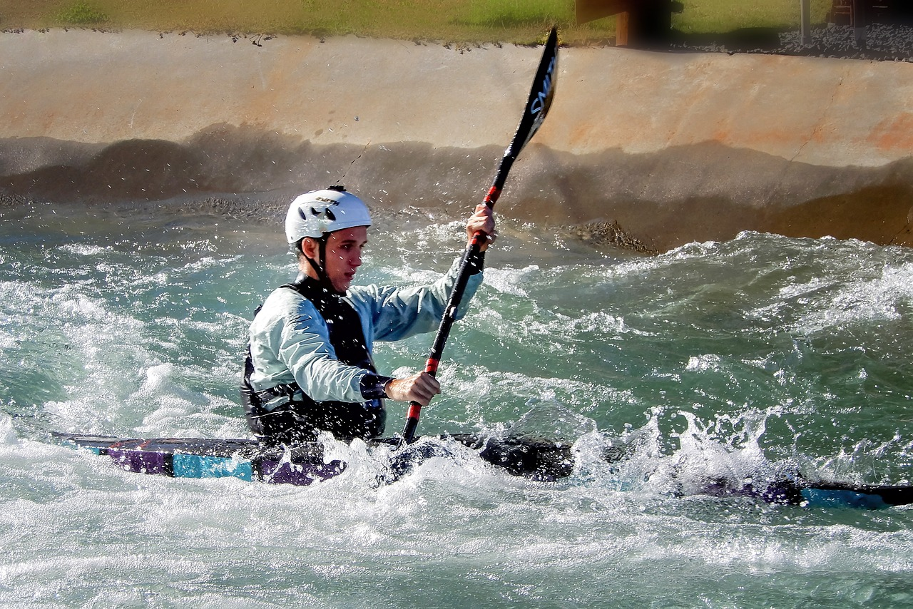

Looking for an unforgettable adventure this coming summer? Worried about finding a team specialized in serving people with special needs?
Your search is over!

Looking for an unforgettable adventure this coming summer? Worried about finding a team specialized in serving people with special needs?
Your search is over!
All Waves Rafting was born 10 years ago from the desire to provide everyone, with or without special needs, the possibility of enjoying all the adventures of Rafting and outdoor activities. All Waves Rafting focuses on ensuring the best outdoor experiences for small groups of people, with a personalized itinerary fully adapted to everyone.
We have already carried out more than 1200 specialized expeditions with 100% success and approval from our customers. All Waves Rafting guides were selected among the most specialized professionals to guarantee all the safety and fun you are looking for and deserve.

Fun safely

Adventure with all your friends together
With all the adaptations so no one misses out on the fun.

We do team training

Fun for the whole family